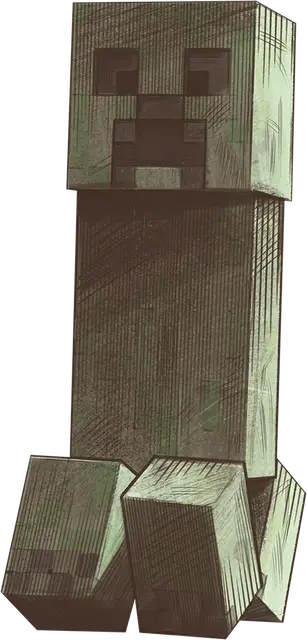

Крипер
Creeper
Средний Монстр, нейтрально-злой

Класс Доспеха 12 (природный доспех)
Хиты 19 (3к8 + 6)
Скорость 30 футов
| мод | спас | ||
|---|---|---|---|
| СИЛ | 10 | +0 | +0 |
| ЛОВ | 11 | +0 | +0 |
| ТЕЛ | 14 | +2 | +2 |
| мод | спас | ||
|---|---|---|---|
| ИНТ | 6 | −2 | −2 |
| МДР | 8 | −1 | −1 |
| ХАР | 3 | −4 | −4 |
Иммунитет к урону электричество
Иммунитет к состояниям истощение
Чувства тёмное зрение 60 футов, пассивное Восприятие 13
Опасность 1/2 (100 опыта)
Бонус мастерства +2
Особенности
Странная физиология. Крипер не может совершать действия, кроме Рывка, Отхода, Засады и Поиска. Он не может совершать бонусные действия или реакции.
Голова Крипера. Когда хиты крипера падают до 0 от взрыва заряженного крипера (см. особенность Разрушение), он умирает, и его голова отваливается. Упавшая голова крипера полая, и ее можно носить как маску с отверстиями для глаз и рта.
Разрушение. Когда он заканчивает свой ход в пределах 10 футов от Гуманоида, которого он может видеть, крипер перестает двигаться и издает достаточно громкое шипение, чтобы его услышали существа в пределах 30 футов от него.
Если хиты крипера опускаются до 0 до начала его следующего хода, шипение прекращается, и крипер умирает. В противном случае в начале следующего хода крипера происходит одно из следующих событий:
• Если в пределах 10 футов от шипящего крипера нет Гуманоидов, он перестает шипеть. Затем он использует любое доступное движение, чтобы приблизиться к ближайшему Гуманоиду, которого он может видеть.
• Если в пределах 10 футов от шипящего крипера находится один или несколько Гуманоидов, крипер взрывается шаром энергии, который заполняет сферу радиусом 20 футов с центром на себе. Эта энергия огибает углы. Крипер уничтожается и все остальные существа в области взрыва должны совершить спасбросок Ловкости Сл 12, получив 14 (4к6) урона силовым полем в случае провала или половину этого урона в случае успеха. Увеличьте этот урон на 7 (2к6), если крипер заряжен (см. Электрический заряд ниже). Объекты в этой области, которые не носят и не несут, получают 14 (4к6) урона силовым полем или 21 (6к6) урона силовым полем, если крипер заряжен.
Электрический заряд. Всякий раз, когда крипер получает урон электричеством, он не получает урона, а заряжается на 1 минуту. Во время зарядки крипер излучает тусклый синий свет в радиусе 5 футов.
Страх перед кошачьими. Крипер становится испуганным всякий раз, когда он начинает свой ход в пределах 60 футов от кошачьего существа, которое он может видеть. Состояние длится до начала следующего хода крипера.
Описание
Крипер — это зеленое безрукое существо, которое появляется в темноте и бесшумно бродит по миру на своих четырех коротких ногах. Его необычное лицо ничего не говорит о его мотивах, но его деструктивность делает его одной из величайших угроз как жизни, так и имуществу в Верхнем мире.
Крипер тихо шаркает к гуманоидной добыче. Подойдя достаточно близко, он останавливается и начинает шипеть, как горящий фитиль. Если крипер не будет побежден или его цель не уйдет достаточно далеко, чтобы крипер обезвредил себя, через несколько коротких мгновений крипер взорвется, оставив кратер на том месте, где он когда-то стоял.
Криперы обладают сверхъестественной способностью появляться в самый неожиданный момент, и лишь немногие места защищены от их взрывоопасной природы. Однако у криперов есть одна странная слабость: они боятся кошек и делают всё возможное, чтобы их избегать.
Если молния поражает крипера, он не получает вреда, а заряжается электричеством. В этом заряженном состоянии крипер приобретает голубоватую ауру и может взрываться с ещё большей силой.